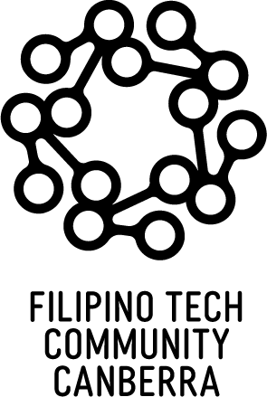

We connect, support, and upskill Filipino ICT professionals in Australia — building the next generation of digital leaders in Canberra and beyond.
We are bound together by shared values, common dreams, and a love for technology and community.
We are Filipinos by descent and heritage — proud of where we come from and what we bring to Australia.
We are passionate about everything that involves technology and innovation — from code to cloud and beyond.
We build a nurturing community of peers, friends, and kababayans where everyone has a place.
We aspire to learn from each other and share our personal skills, experience, and wisdom in return.
We are creative makers who enjoy designing, developing, and producing amazing things together.
We value sharing our talents and skills for the good of others and the broader community we serve.
100% in service of every Filipino ICT professional, student and tech enthusiast in Canberra.
FTCC was founded to elevate Filipino ICT professionals in Australia — enabling through education, supporting through training, and connecting them to the right people.
Explore all programsOur first General Assembly as a formally incorporated association in the ACT. A historic milestone for the community.
Celebrating Philippine Independence Day alongside the broader Filipino community in Canberra.
FTCC members participating in GovHack — Australia's biggest open data hackathon. Teams welcome!
FTCC was born from a shared desire to give back — to create something that uplifts the whole community.
"FTCC was founded to elevate Filipino ICT professionals in Australia as leaders, not just doers, by enabling through education, supporting through training and workshops, connecting them to the right people, and celebrating their contributions to Australian companies and industries through the spirit of Bayanihan."
"The idea of FTCC stemmed from my desire to give back to the community. My hope is that we help build the next workforce and leaders in ICT who excel not only in their domain, but are actively taking a role in shaping an inclusive, equitable, and nurturing tech industry in Australia."
Membership is open to all Filipino ICT professionals, students and tech enthusiasts in Canberra. Annual fee: just $1–$2.